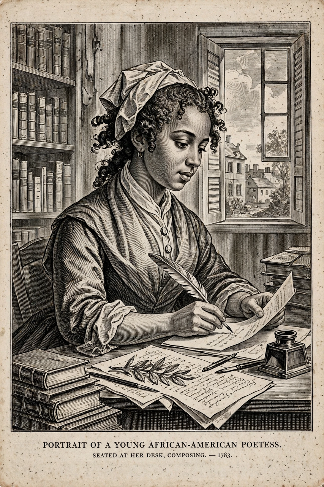

Phillis Wheatley
| Phillis Wheatley Peters | |
 | |
| Born | c. 1753, West Africa (probably Gambia or Senegal) |
|---|---|
| Died | December 5, 1784 (aged about 31), Boston, Massachusetts, U.S. |
| Occupation | Poet |
| Notable work | Poems on Various Subjects, Religious and Moral (1773) |
Phillis Wheatley Peters (c. 1753 – December 5, 1784) was an American writer, the first African-American author of a book of poetry. Born in West Africa, she was sold into slavery at the age of seven or eight and transported to North America, where she was bought by the Wheatley family of Boston, who educated her in English, Latin and the classics.
Life and work
Named Phillis after the slave ship that carried her, and Wheatley after her owners, she learned to read and write with astonishing speed and by age 12 was reading Greek and Latin classics. Her elegy on the death of the evangelist George Whitefield (1770) brought her transatlantic fame. Because Boston publishers doubted that an enslaved Black woman could have written her poems, her 1773 volume, Poems on Various Subjects, Religious and Moral, was published in London with an attestation signed by eighteen prominent Boston men, including Governor Thomas Hutchinson and John Hancock.
In England she was celebrated and presented with gifts; she was manumitted shortly after her return to Boston. In 1775 she wrote a poem to George Washington, who invited her to visit him at his Cambridge headquarters in 1776. She married John Peters, a free Black grocer, in 1778. After the Revolutionary War she lived in poverty; a second volume of poems was never published for lack of subscribers, and she died in 1784, aged about 31, with her last surviving child dying the same day.
Legacy
Wheatley's poems — neoclassical, pious and formally polished — have been read both as proof used by abolitionists of African intellectual capacity, and, by some later critics, as overly deferential; scholars such as Henry Louis Gates Jr. have restored her centrality to the founding of African-American literature, a tradition continued by Equiano's narrative and later writers.